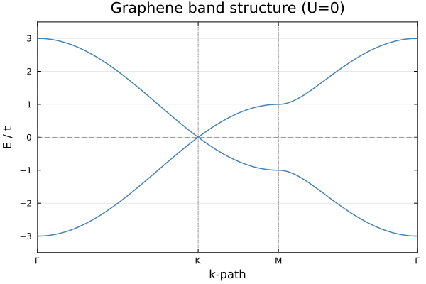
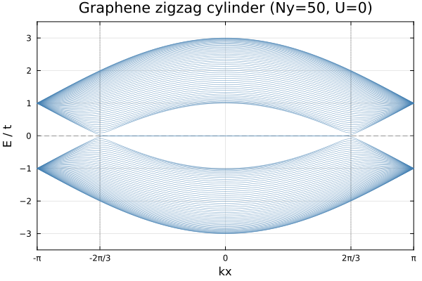
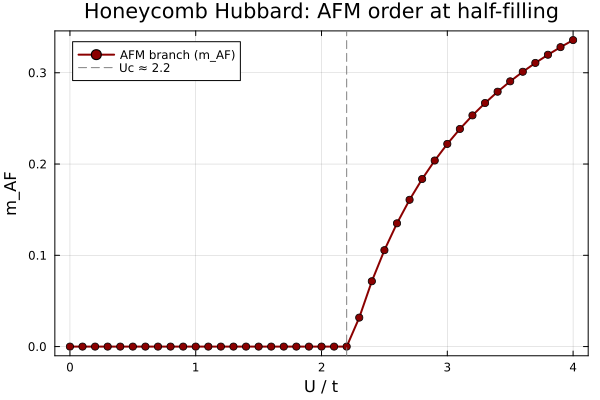
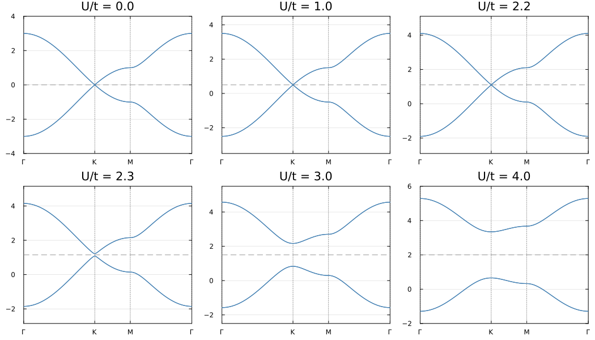

Example: AFM Transition in Honeycomb Lattice Hubbard Model
This example demonstrates the antiferromagnetic (AFM) transition in the Hubbard model on a honeycomb lattice (graphene) at half-filling. A staggered magnetic moment develops on opposite sublattices beyond a critical coupling $U_c/t \approx 2.2$, opening a gap at the Dirac points.
The calculation requires no prior knowledge of the ordered phase: the ground state is found automatically using symmetry-breaking warmup restarts (see ⚠️ Critical Pitfall in the momentum-space HF documentation).
Physical Model
\[H = -t \sum_{\langle ij \rangle,\sigma} (c^\dagger_{i\sigma}c_{j\sigma} + \text{h.c.}) + U \sum_i n_{i\uparrow}n_{i\downarrow}\]
\[t\]
: nearest-neighbor hopping (set to 1)\[U\]
: on-site Coulomb repulsion- Half-filling: 2 electrons per unit cell
The honeycomb lattice has two sublattices A and B. The mean-field AFM order parameter is:
\[m_{AF} = \frac{1}{2}\left|\frac{\langle S^z_A \rangle - \langle S^z_B \rangle}{2}\right|, \qquad \langle S^z_X \rangle = \frac{n_{X\uparrow} - n_{X\downarrow}}{2}\]
Method
The calculation uses momentum-space unrestricted Hartree-Fock (solve_hfk) on a $100\times100$ $k$-grid. For each value of $U$, a single solve_hfk call with n_restarts=5 and field_strength=1.0 is used. Each restart injects a different random Hermitian symmetry-breaking field into the effective Hamiltonian for the first 15 SCF iterations, then gradually removes it, allowing the SCF to converge freely to the true ground state.
This replaces the old approach of running twice with hand-crafted AFM and PM initial conditions and is fully general: no knowledge of which phase to expect is required.
Code
# System setup
dofs = SystemDofs([Dof(:cell, 1), Dof(:sub, 2, [:A, :B]), Dof(:spin, 2, [:up, :dn])])
nn_bonds = bonds(unitcell, (:p, :p), 1)
onsite_bonds = bonds(unitcell, (:p, :p), 0)
onebody_hop = generate_onebody(dofs, nn_bonds,
(delta, qn1, qn2) -> qn1.spin == qn2.spin ? -t : 0.0)
kpoints = build_kpoints([a1, a2], (100, 100))
n_elec = 2 * length(kpoints) # half-filling
# Hubbard interaction
function build_U_ops(U)
return generate_twobody(dofs, onsite_bonds,
(deltas, qn1, qn2, qn3, qn4) ->
(qn1.spin, qn2.spin, qn3.spin, qn4.spin) == (1,1,2,2) ? U : 0.0,
order = (cdag, :i, c, :i, cdag, :i, c, :i))
end
# U sweep: ground state found automatically via symmetry-breaking restarts
for U in U_sweep
U_ops = build_U_ops(U)
twobody = (ops=U_ops.ops, delta=U_ops.delta, irvec=U_ops.irvec)
r = solve_hfk(dofs, onebody_hop, twobody, kpoints, n_elec;
n_restarts = 5, # independent random restarts
field_strength = 1.0, # random symmetry-breaking field, O(t)
n_warmup = 15, # field active for first 15 iters, then decays
tol = 1e-12,
verbose = false)
m_afm = afm_order_parameter(r.G_k)
phase = m_afm > 0.01 ? "AFM" : "PM"
println(@sprintf("U = %.2f E = %+.8f m_AF = %.6f %s", U, r.energies.total, m_afm, phase))
endWhy field_strength is needed
Without the symmetry-breaking field, the paramagnetic (PM) solution acts as a stable fixed point of the SCF map even when it is not the ground state — every random restart converges to PM regardless of interaction strength:
# Without field_strength (old behavior): all 10 restarts → PM saddle point
Restart 1: E = -1.1491951239 (CONVERGED, 12 iters) ← PM
Restart 2: E = -1.1491951239 (CONVERGED, 12 iters) ← PM
... (all 10 restarts identical)With field_strength = 1.0 and n_warmup = 15, each restart explores a different symmetry-broken direction and 8 out of 10 find the true AFM ground state:
# With field_strength=1.0, n_warmup=15, n_restarts=10
Restart 1: E = -1.1491951239 (CONVERGED, 45 iters) ← PM (unlucky)
Restart 2: E = -1.3479535976 (CONVERGED, 29 iters) ← AFM ground state ✓
Restart 3: E = -1.3479535998 (CONVERGED, 32 iters) ← AFM ground state ✓
...
Restart 9: E = -1.3479535976 (CONVERGED, 28 iters) ← AFM ground state ✓
Restart 10: E = -1.1491951239 (CONVERGED, 36 iters) ← PM (unlucky)The solver automatically returns the lowest-energy result.
Running the Example
julia --project=examples -t 8 examples/SM_AFM/run.jlThis will:
- Compute the U=0 graphene band structure along Γ–K–M–Γ
- Compute the zigzag cylinder band structure (edge states)
- Sweep $U$ from 0 to 4 (41 points) using symmetry-breaking restarts
- Compute the AFM order parameter $m_{AF}$ for each $U$
- Save results to
res.datand generate plots:graphene_bands_2d.png: 2D graphene band structuregraphene_bands_cylinder.png: zigzag cylinder band structureafm_order_parameter.png: $m_{AF}$ vs $U$afm_bands.png: mean-field band structures at selected $U$ values
Results
Graphene Band Structure (U=0)

Linear dispersion near the K points (Dirac cones). Valence and conduction bands touch at K, making graphene a semi-metal.
Zigzag Cylinder Band Structure (U=0)

Edge states appear in the gap region for a zigzag-edged cylinder, crossing the Fermi level at $k_x = \pm 2\pi/3$.
AFM Order Parameter

The calculated critical coupling $U_c/t \approx 2.2$ agrees with mean-field theory predictions. Below $U_c$, $m_{AF} = 0$ (PM); above $U_c$, $m_{AF}$ grows continuously (AFM).
Mean-Field Band Evolution

As $U$ increases beyond $U_c$, a gap opens at the Dirac points and the system transitions from a semi-metal to an AFM insulator.
References
[1] S. Sorella and E. Tosatti, Semi-metal-insulator transition of the Hubbard model in the honeycomb lattice, EPL 19 699 (1992).